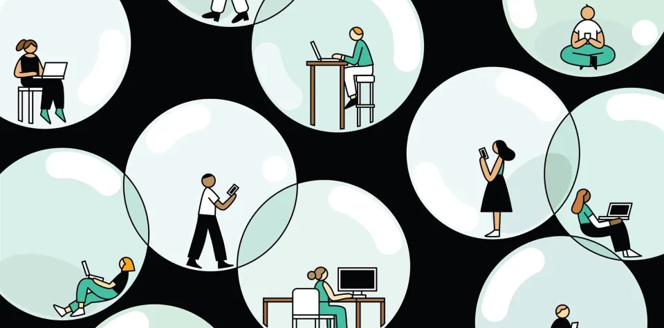
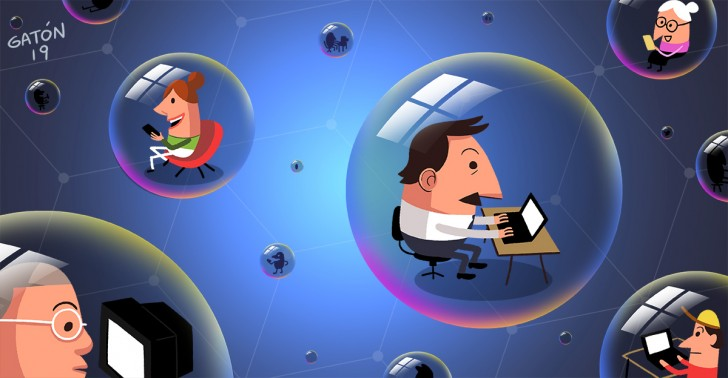
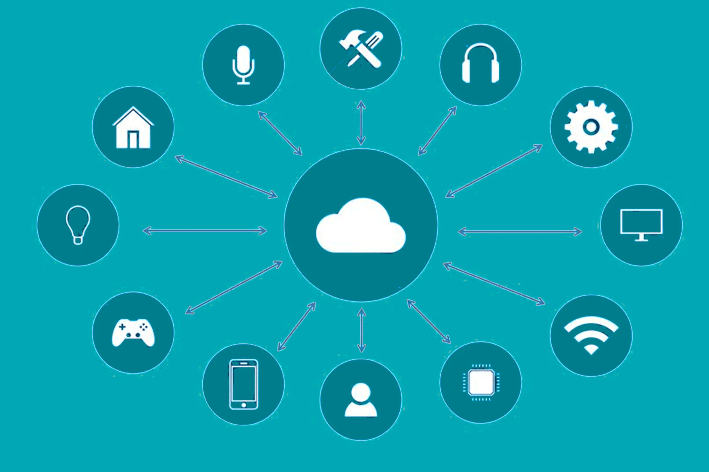
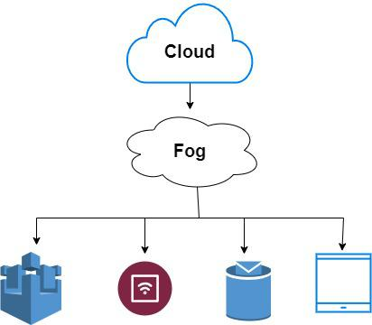

Marshall McLuhan ('serendipia en acción')

Marshall McLuhan fue un académico y teórico canadiense de la comunicación (1911–1980) conocido por ideas y frases muy influyentes como “the medium is the message” y “aldea global”; sus libros clave son Understanding Media y The Gutenberg Galaxy. Su trabajo examinó cómo los medios (televisión, prensa, radio, etc.) configuran la percepción y la vida social por sí mismos, más allá del contenido que transmiten.
McLuhan escribía en estilo “mosaico” y usaba lo que él llamaba probes (sondeos/aforismos) y collages de citas y ejemplos para provocar conexiones inesperadas en el lector: esa forma de trabajo buscaba generar descubrimientos inesperados, es decir, serendipia, mediante la comparación, la yuxtaposición y la multiplicidad de perspectivas.
En su biografía y estudios se relatan episodios y encuentros (a veces “serendipiosos”) que influyeron en su pensamiento; además su insistencia en “crear ambientes” de observación interdisciplinaria y en la experimentación intelectual tiende a producir descubrimientos no planificados.
Marshall McLuhan es reconocido por 'serendipia en acción' ya que realizado descubrimientos a veces no planificados.
Fuente: Wikipedia.
Aldea Global
La frase de “aldea global” (o global village) fue creada por Marshall McLuhan en los años 60', como metáfora de cómo los avances tecnológicos en comunicación “encogen” el mundo al eliminar barreras de espacio y tiempo.
McLuhan argumentaba que los medios electrónicos, radio, televisión, más tarde Internet, actúan como extensiones del sistema nervioso humano, conectando instantáneamente personas de lugares remotos, de modo que un suceso local puede ser experimentado globalmente en vivo. De esta forma, el mundo se convierte simbólicamente en una pequeña comunidad donde todos “se ven entre sí”.
Pero McLuhan no idealizó ese mundo: advertía que una aldea es también un espacio de cercanía, fricción, conflictos y vigilancia constante. En su visión, cuanto más creamos las condiciones de “aldea”, más se generan desacuerdos, diversidad de opiniones y choques culturales.
En la era de Internet, redes sociales y comunicación instantánea, la metáfora de la aldea global ha cobrado aún más relevancia. Lo que sucede en un país, una crisis, una moda, una noticia se propaga en segundos y afecta percepciones colectivas en todo el mundo. Al mismo tiempo, hay críticas: esa interconexión puede conducir a la homogeneización cultural (dominancia de culturas más poderosas), pérdida de identidades locales, desigualdad digital y concentración del poder en plataformas mediáticas globales.
La aldea global no es un hecho ya consumado ni un ideal utópico, sino un campo de tensión: la posibilidad de solidaridad planetaria o de fragmentación cultural, de vigilancia mutua o libertad comunicativa.
Charla de Marshall McLuhan sobre la aldea global (fuente).
Eli Parecier
Eli Pariser es un activista y escritor estadounidense, reconocido por su trabajo en tecnología y política digital. Su contribución más influyente es el concepto de “burbuja de filtros” (filter bubble), que describe cómo los algoritmos de personalización en Internet seleccionan contenido basado en nuestros intereses y comportamientos previos. Esto genera un entorno informativo que refuerza nuestras creencias, limita la exposición a perspectivas diferentes y, en muchos casos, aísla a los usuarios de información relevante o desafiante.
Pariser demostró que estas burbujas de filtros tienen implicaciones importantes para la democracia y la sociedad. Al recibir información sesgada, las personas tienden a polarizarse más fácilmente y pueden perder la capacidad de evaluar ideas de manera crítica. Además, este aislamiento reduce la posibilidad de descubrimientos inesperados y enriquecedores, lo que él identifica como un impacto negativo sobre la serendipia en la experiencia digital. La serendipia, entendida como el hallazgo afortunado de información valiosa de manera inesperada, se ve limitada cuando los algoritmos filtran el contenido para mostrar solo lo que coincide con nuestras preferencias previas.
Para contrarrestar estos efectos, Pariser ha promovido la conciencia sobre cómo funcionan los algoritmos y sus consecuencias, además de impulsar proyectos como Upworthy, que busca generar contenido diverso y emocionalmente atractivo. Su objetivo es romper las burbujas de filtros y fomentar la exposición a ideas variadas, promoviendo un entorno digital donde la serendipia pueda suceder y los usuarios tengan acceso a información más equilibrada.
En resumen, Eli Pariser no solo identificó un fenómeno crucial de la era digital, sino que también alertó sobre sus riesgos y propuso estrategias para maximizar la diversidad informativa y las oportunidades de descubrimiento. Su trabajo destaca cómo la tecnología puede tanto restringir como potenciar la serendipia, dependiendo de cómo se diseñen los sistemas de información.
Charla importante realizada por Eli Parecier aquí (fuente).
Burbuja de Filtro

El término Burbuja de Filtro fue creado por Eli Parecier entre los años 2010 y 2011 que consiste en un fenómeno de aislamiento informativo que surge cuando un algoritmo de un navegador, una red social, etc., personalizan el contenido que puede observar el usuario con el fin de predecir lo que pueda resultarle de mayor interés a este y atraer su atención.
Las redes sociales son las que mayormente suelen llevar a cabo dicho fenómeno. El algoritmo logra conseguir esto recopilando información del historial de busqueda, likes e interacciones, ubicación, amigos (sus algoritmos), etc. Luego, a la hora de presentar un contenido en el feed o al enviarle una notificación o noticia al usuario, prioriza lo que cree que le podría resultar más relevante según toda la información recopilada.
Eli Parecier afirma que las Burbujas de Filtro "aisla a los usuarios de información relevante o desafiante" debido a que, a la hora de presentarle contenido al usuario mediante el feed, notificaciones, etc. el algoritmo priorizará la información que cree que le interesará antes que una información importante que esta circulando en el internet, por lo que cada usuario se ve excluído de cierta información y se encuentra "encerrado" (aislado) por información poco relevante seleccionada para él.
Charla de Eli Parecier sobre las Burbujas de Filtro aquí (fuente).
Gatekeeping
El concepto de Gatekeeping pertenece propiamente al ámbito de la informática y la comunicación, y consiste en la selección de la información que se va a difundir por parte de los medios de comunicacón que eliguen y determinan que es relevante y digno de atención. Esto genera que la información que reciben los usuarios no siempre es la más relevante, sino la que los medios de comunicación consideran que es más atrayente.
Con el paso de tiempo, este concepto se amplió y no se reservó únicamente para los periodistas y medios de comunicación, sino que, con la llegada de las redes sociales, todos los usuarios creadores de contenido se vuelven "gatekeepers" ya que toda la comunidad al difundir una misma información, eliguen que debe viralizarse, que debe volverse tendencia y que deben recibir de información todos los usuarios a causa de que una información que se viralizó y "tapó" a otras por su poco interés colectivo.
El concepto de Gatekeeping comenzó a utilizarse para otros fines ajenos a la comunicación, también puede referirse al acceso restringido de una o un grupo de personas de una comunidad, institución o espacio. Sin embargo, no deja de utilizarse en situaciones relacionadas a la informática. Por ejemplo, si una comunidad de un videojuego excluye a ciertas personas por no poseer cierto rango o prestigio dentro del mismo, se considera esta situación como un caso de Gatekaaping.
Fuente: later.com.
Fake News
El término de Fake News ha sido utilizado para referirse la difusión de noticias falsas que provocan un peligroso círculo de desinformación. Las redes sociales permiten que los usuarios sean productores y consumidores de contenidos a la vez, y han facilitado la difusión de contenido engañoso, falso o fabricado. Así se genera un circuito vicioso, y una noticia falsa se replica miles de veces en cuestión de segundos, haciéndole creer con certreza las personas algo que no es real.
La organización First Draft ha diferenciado siete tipos de contenido erróneo que puede circular:
- Sátira o parodia: información falsa que no busca causar ningún tipo de daño.
- Contenido engañoso: información falsa cuyo fin es incriminar a una persona u organización.
- Contenido impostor: información falsa que suplanta y se hace pasar por fuentes genuinas.
- Contenido fabricado: información mayormente falsa diseñada para engañar y perjudicar a alguien o algo.
- Conexión falsa: cuando la información presentada en los titulares y/o imágenes no concuerda con el contenido del artículo.
- Contexto falso: información cuyo contenido es real pero su contexto es falso.
- Contenido manipulado: información o imágenes reales, pero manipuladas para engañar.
Fuente: PDF "¿Qué son las Fake News? de IJF".
Transversalidad de Burbujas de Filtro

Las Burbujas de Filtro no son un concepto que comienza y termina en el ámbito de la informática, sino que también trasciende a la vida cotidiana de cada usuario.
En el ámbito social, las Burbujas de Filtro hacen creer a cada individuo que un gusto o forma de pensar es lo que "creen todos" y quien opine distinto o no este enterado de alguna información, quede excluido. Esto sucede debido a que si el algoritmo de una persona le muestra contenidos relacionados a un determinado tema, y su grupo social también ya que comparten gustos, les hace creer que lo que les aparece a ellos es tendencia y todos están de acuerdo, mientras que existen usuarios que no reciben la misma información y ellos también creen que lo que reciben ellos es lo que realmente importa.
En el ámbito político, las Burbujas de Filtro constribuyen a la difusión de una ideología. Si el algoritmo de un usuario se encuentra sujeto a una determinada ideología política, este recibirá información relacionada a un único partido político o contenido de personas apoyando dicho pensamiento y contradiciendo a los demás partidos. Esto provoca que el usuario quede excluido de noticias de como piensan los otros partidos y contenido que busca describir una situación de forma imparcial. Además, esto contribuye a que una persona solo conserve su propia ideología, reduciando las posibilidades de que lo replantee por su propia cuenta obserrvando lo que realmente pasa y no solo lo que su algoritmo le muestra.
Fuente: policyreview.info.
Cloud Computing.

El Cloud Computing (computación de la nube) es un concepto que se utiliza para referirse a una forma de compartir información y procesarla a través del internet en un entorno en común que se denomina "nube".
La "nube" se trata de servidores, bases de datos o distintos almacenamientos privados o públicos donde los dispositivos pueden subir información, guardarla, procesarla y compartirla.
El Cloud Computing hace posible que la conexión entre usuarios sin importar su distancia física sea posible, debido a que conectar dos dispositivos que se encuentran a una extensa distancia entre sí no es viable, ya que puede resultar lento, dificultoso o imposible, por lo que se utiliza dicho método para lograrlo sin problemas.
Fuente: ibm.com.
Fog Computing.

Se conoce como Fog Computing al modelo de informática para compartir información y procesarla desde un instrumento intermediario entre el dispositivo que genera la información (la computadora del usuario, su celular, etc.) y la nube a la que se envía dicha información (Cloud Computing).
Para que un usuario suba información a la nube, no es viable una conexión directa entre el dispositivo del usuario (ej: su celular) y la nube debido a que esta última suele estar en los alojada físicamente en los satélites, y esta distancia extensa lo imposibilita, debido a ello, existen dispositivos domésticos que si son capaces de establer una conexión directa con los satélites y con los dispositivos de una casa y funcionan como intermediarios: el Modern, que emite y recepta la información de los dispositivos de la casa, y Router, que envía y capta información de la nube (los satélites)
El modern y el router son dos dispositivos que cumplen lo que se conoce como Fog Computing. Hoy en día, con el fin de reducir el cableado y ahorrar espacio físico que estos dispositivos requieren y ocupan, se los unificó en uno solo conocido como Modern-Router que cumple ambas funciones a la vez de conectarse con un satélite y un dispositivo domético (ej: una computadora), enviando y recibiendo señales constantemente.
Fuente: arsys.es.
Neutralidad de la Web
Se denomina Neutralidad de la Web o Neutralidad de la Red al conepto que promueve la igualdad de uso de todas las aplicaciones como libre competencia en el mercado virtual, cobrándole a los usuarios la misma cantidad de datos moviles, sin importar la aplicación, sitio web, red social, etc. que hayan utilizado.
Que una empresa le cobre mayor o menor cantidad de datos móviles a un usuario por utilizar determinadas plataformas con las que tiene acuerdos, deja en desventaja a otras aplicaciones y perjudica a la competencia, por lo que entre concepto promueve evitar que esto suceda.
Fuente: nic.ar.
Edge Computing

El Edge Computing es la capacidad que tienen los dispositivos (celular, cámara, automovil, etc.) en procesar información por si mismos, sin tener que enviarlos a la una nube (Cloud Computing) y utilizar un intermediario con ella (Fog Computing)
Asi como se encuentra la nube y el intermediario, se encuentran los dispositivos que se conocen como Edge Computing. Con el fin de aumentar la velocidad en el procesamiento de información, lo ideal es que estos dispositivos lo hagan por sus propias cuentas. En la actualidad, existen múltiples dispositivos autónomos que pueden analizar gran parte de la información por su cuenta, sin embargo, siempre necesitan alguna conexión con la nube, pero el objetivo es aumentar la proporción de las actividades que pueden realizar de forma independiente.
En resúmen, en el Cloud Computing, la información se procesa en la nube (servidores, satélites, etc.), en el Fog Computing, la información se procesa en el intermediario entre la nube y los dispositivos (Modern, Router o, normalmente, Modern-Router) que hace viable la existencia de la nube, y en el Edge Computing, los dispositivos procesan la información de forma autónoma e independiente.
Fuente: arsys.es.
Zero Rating
El Zero Rating es un acuerdo propuesto por las empresas telefónicas con ciertas plataformas (redes sociales, aplicaciones, etc.) para que sus usuarios puedan utilizar dichas plataformas sin consumir datos móviles al hacerlo.
El Zero Rating tiene como objetivo promocionar ambas empresas, los usuarios utilizan la empresa telefónica para utilizar ciertas aplicaciones sin consumir MegaBytes de su plan. Esto beneficia al usuario en poder hacer uso de aplicaciones sin costo de datos, pero perjudica a otras aplicaciones ya que los usuarios van a preferir las que no consumen datos, dificultando la competencia, dejando en desventaja a algunas aplicaciones sobre otras y no cumpliendo con la propuesta de la Neutralidad de la Web.
Fuente: berec.europa.eu.